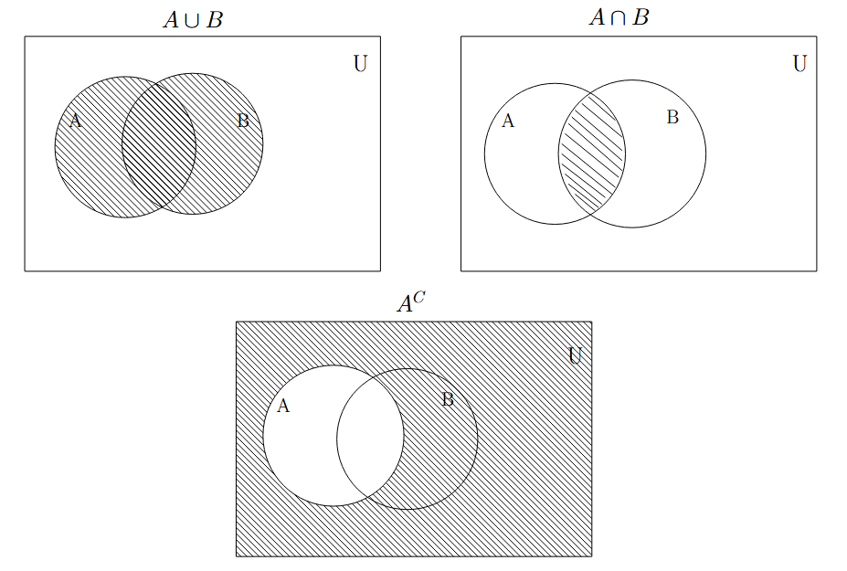
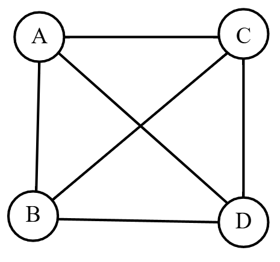
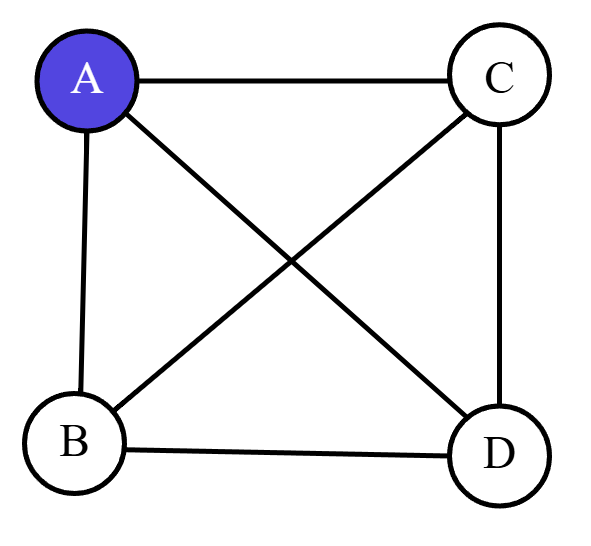
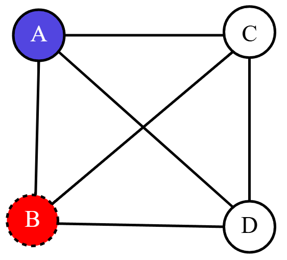
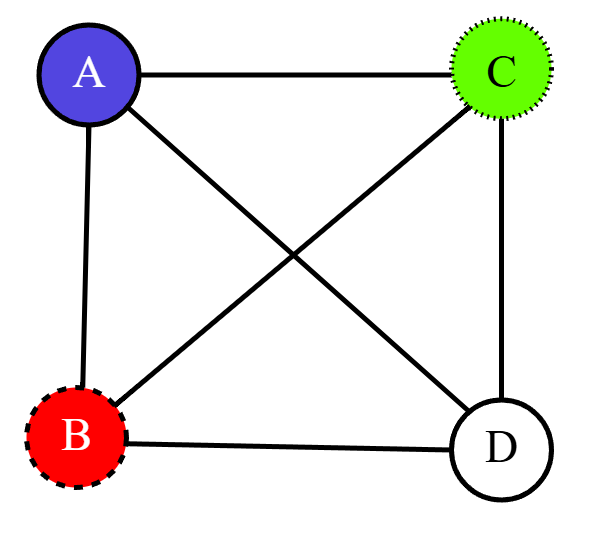
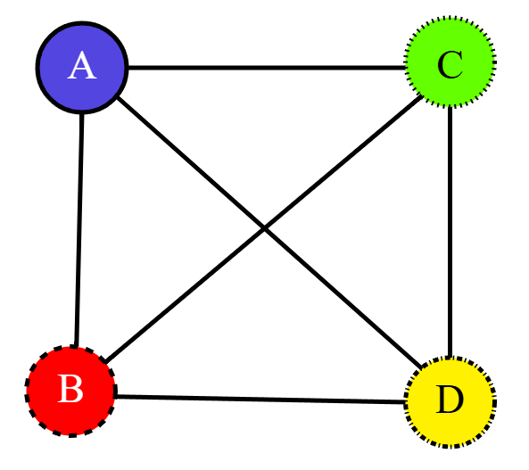
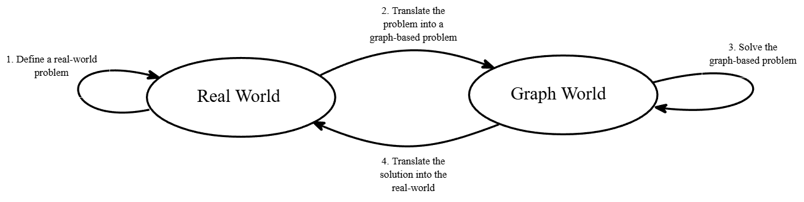
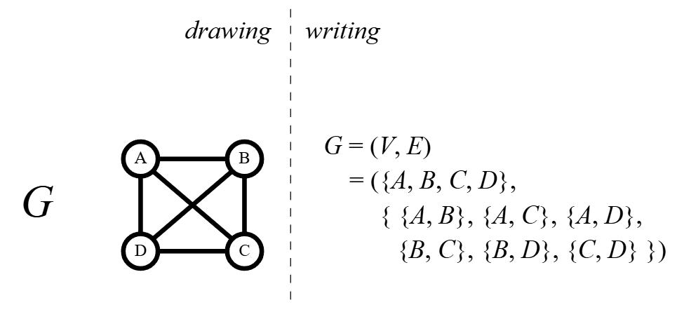
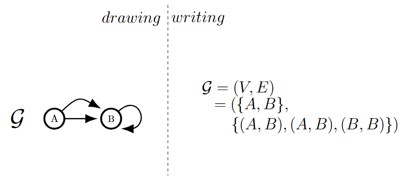
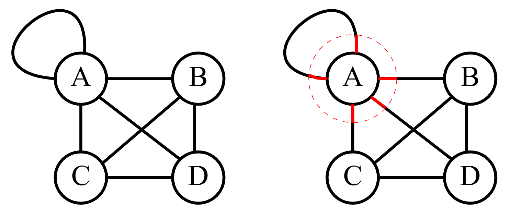

Lecture 2: Basics of Graphs#
Last Class#
We discussed sets, set operations, and functions. Beloow are key operations to remember:
\(A\cup B=\{x\in U: x\in A\text{ or }x \in B\}\)
\(A\cap B=\{x\in U: x\in A\text{ and }x \in B\}\)
\(A^C=\{x\in U: x\notin A\}\)
{kind=link}

Fig. 3 Top left, union of \(A\) and \(B\). Top right, intersection of \(A\) and \(B\). Below, the complement of \(A\).#
Warmup#
Answer
We need 4 meetings! We can actually rephrase this question in terms of graphs. We will define all the objects we are about to discuss today. But, let us get some experience with them first.
Let us pretend that the committees are vertices. Two vertices will be connected by an edge if the committees share a member. Since every committee shares a member with every other committee, we have a graph that looks like this:
{kind=link}

Now, we will start to assign meeting times. Let’s pretend committee A meets at some time (9AM, 12PM, etc. it doesn’t really matter). Let us represent them meeting by coloring the vertex A the color red:
{kind=link}

Now, since A has a meeting scheduled, the member that is shared between committee A and B has a problem. If committee B meets at time red, the shared member will not be able to make the meeting. So, committee B must meet a time that is not red. Say, blue. So, we color the vertex B the color blue:
{kind=link}

Well, committee A and B both share a member with committee C. So, we better not schedule a meeting at time red or time blue otherwise those people will not be able to make. So, we color the vertex C the color green:

{kind=link}
All three previous committees have scheduled meetings and share members with D. We want to make sure these members attend committee D’s meeting as well. So, we color the vertex D the color yellow:

{kind=link}
These colors represented meeting times. The coloring of the vertices represented scheduling times for committees. Since no two vertices who shared an edge had the same color, the number of meetings we have to schedule is the number of colors: 4.
What the day’s warmup displays is the benefit of graph theory in real-world problems. While meeting times have nothing to do with coloring vertices, we can still derive the solution using the coloring of vertices.
{kind=link}

Fig. 4 What we often try to do in graph theory. We take a problem in the real-world, solve it in the graph-world, and translate the solution to the real-world.#
Graphs#
There are two broad categories we will form for this course: graphs and digraphs. Below are the definitions for both.
Definition 9 (Graph)
A graph \(G=(V,E)\) is an ordered pair where \(V\) is a finite, non-empty set of objects called vertices and \(E\) is a possible empty set of unordered pairs of vertices. Objects in \(E\) are called “edges”.
{kind=link}

Fig. 5 An example of a graph.#
Definition 10 (Digraph)
A digraph G=(V,E) is an ordered pair where \(V\) is a finite, non-empty set of objects called nodes and E is a possible empty set of ordered pairs of nodes. Objects in E are called “arcs”.
{kind=link}

Fig. 6 An example of a digraph.#
We will further classify graphs and digraphs into two categories: simple and not simple. Below is the definition of simple. A self-loop is an edge (arc) between a vertex (node) and itself. Multiple-edges means there is more than one identical edge between a pair of vertices. Likewise with digraphs and multiple-arcs.
Definition 11 (Simple)
A simple graph has no self-loops and no multiple-edges. Likewise with a simple digraph.
Definition 12 (Degree)
The number of times a vertex is an endpoint of an edge in a graph.
Notationally, we denote the degree of vertex v in graph G \(d_G(v)\) (though \(d_v(G)\) will be fine too).
{kind=link}

Fig. 7 An example of degree in a graph. Since A is the endpoint 5 times, the degree of A is 5.#
With these definitions we can prove our first graph theory result!
Lemma 1 (The Handshaking Lemma)
Let \(G=(V,E)\) be a graph on \(n\) vertices (\(v_1,v_2,\dots, v_n\)) and \(m\) edges. Then,
Proof. If \(G\) has no edges, this is a very boring proof indeed \(\left( \sum\limits_{i=1}^n 0 = 2 (0) \right)\). So, let us assume there is at least one edge in the graph.
Left hand side: Consider an edge \(\{v_k,v_{\ell}\}\) in \(E\). Note that each term in the sum, \(d_G(v_i)\), counts the number of times \(v_i\) is an endpoint of an edge. For an edge \(\{v_k,v_{\ell}\}\), the first endpoint is counted by \(d_G(v_k)\) and the other is counted by \(d_G(v_{\ell})\). That is, the edge \(\{v_k,v_{\ell}\}\) is counted twice. So, the left hand side counts each edge twice.
Right hand side: Since \(m\) is the number of edges, \(2m\) counts each edge twice.
Conclusion: Since both the left hand side and the right hand side count the same thing, they are equal. Therefore, \( \sum\limits_{i=1}^n d_G(v_i) = 2m\).
An immediate corollary of this fact:
Corollary 1
For a graph \(G\), there is an even number of odd degree vertices.
Proof. Let \(G=(V,E)\) have \(n\) vertices and \(m\) edges. Let \(W\) be the set of vertices with even degree and \(U\) be the set of vertices with odd degree. Note that all vertices in \(G\) are in \(W\) or \(U\) not both. By the Handshaking Lemma, \(2m=\sum\limits_{i=1}^nd_G(v_i)\). We will split the sum in to two parts:
\(\begin{align*} 2m &=\sum\limits_{i=1}^nd_G(v_i)\\ &=\sum\limits_{v_i\in W}d_G(v_i)+\sum\limits_{v_i\in U}d_G(v_i)\\ \end{align*}\)
For \(v_i\in W\), \(d_G(v_i)\) is even so \(\sum\limits_{v_i\in W}d_G(v_i)\) is even. Since \(\sum\limits_{v_i\in W}d_G(v_i)\) and \(2m\) are even, \(\sum\limits_{v_i\in U}d_G(v_i)\) must be even (even\(+\)odd\(\neq\)even). For \(v_i\in U\), \(d_G(v_i)\) is odd. But, \(\sum\limits_{v_i\in W}d_G(v_i)\) is even. This means there must be an even number of \(v_i\in U\) (odd\(+\)odd\(=\)even). Therefore, there are an even number of odd degree vertices.